01 · Vivencia personal
Mi experiencia en Moda ECCI
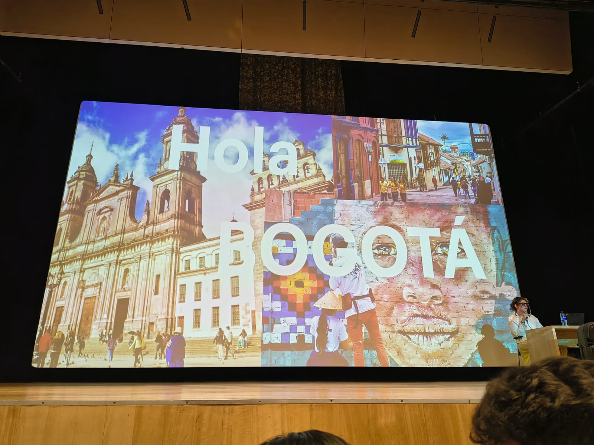
Español
Llegar al auditorio de Moda ECCI y encontrarme con la conferencia de Sara Viloria fue, sin exagerar, un punto de quiebre en la forma en que entiendo mi propio trabajo como desarrollador. Antes de esa charla, para mí el color era casi un capricho estético: una elección que se hacía al final, casi de adorno. Escuchar a Sara explicar cómo cada tono comunica una intención, despierta una emoción y construye una identidad, me hizo darme cuenta de que en el FrontEnd estamos tomando decisiones de comunicación todo el tiempo, no solo decisiones técnicas.
Lo que más me llamó la atención fue la idea de que una interfaz, igual que una colección de moda, también cuenta una historia a través de su paleta. Un formulario con tonos fríos transmite calma y orden; uno con colores cálidos puede sentirse cercano, pero también puede generar urgencia si se usa mal. Entendí que el color no es un detalle final, sino una decisión de experiencia de usuario que debe pensarse desde el primer boceto.
También conecté esta experiencia con la idea de Pantone y la semiología visual: cada color tiene un código, una historia y un significado que cambia según el contexto cultural. Eso me hizo reflexionar sobre cómo, al construir interfaces, no solo estoy escribiendo código, sino también participando en un lenguaje visual compartido que el usuario interpreta de forma consciente e inconsciente.
English
Arriving at the Moda ECCI auditorium and attending Sara Viloria's talk was, without exaggeration, a turning point in how I understand my own work as a developer. Before that talk, color felt almost like an aesthetic whim to me — a choice made at the very end, almost as decoration. Hearing Sara explain how every shade communicates intention, triggers an emotion and builds an identity made me realize that in FrontEnd we are making communication decisions all the time, not only technical ones.
What caught my attention the most was the idea that an interface, just like a fashion collection, also tells a story through its palette. A form with cool tones conveys calm and order; one with warm colors can feel welcoming, but can also create urgency if misused. I understood that color is not a final detail, but a user-experience decision that should be considered from the very first sketch.
I also connected this experience with the idea of Pantone and visual semiology: every color has a code, a history and a meaning that shifts depending on cultural context. This made me reflect on how, when building interfaces, I am not only writing code, but also participating in a shared visual language that the user interprets both consciously and unconsciously.
Color y desarrollo web
Comprendí que la paleta de una interfaz debe definirse pensando en la jerarquía de la información: qué quiero que el usuario vea primero, qué acción quiero que tome y qué emoción quiero transmitir en ese momento.
I understood that an interface's palette must be defined with information hierarchy in mind: what I want the user to see first, what action I want them to take, and what emotion I want to convey at that moment.
Comunicar emociones
Una interfaz comunica emociones igual que una prenda de ropa: a través de su textura visual, sus contrastes, sus espacios y, por supuesto, sus colores. Aprendí a ver cada componente como una pieza de un mensaje completo.
An interface communicates emotions just like a garment does: through its visual texture, contrasts, spacing and, of course, its colors. I learned to see every component as part of a complete message.
Diseño visual y UX
El diseño visual y la experiencia de usuario no son procesos separados: son la misma conversación vista desde dos ángulos. Lo visual atrae, lo experiencial retiene, y el color es el puente entre ambos.
Visual design and user experience are not separate processes: they are the same conversation seen from two angles. The visual attracts, the experiential retains, and color is the bridge between both.
02 · Origen y memoria
Historia del color
"El origen de los colores tiene historias tan fascinantes como complejas." / "The origin of colors holds stories as fascinating as they are complex."
"Las experiencias de los viajes siempre están en las fotografías." Esta frase, mencionada también en la conferencia, cobra sentido cuando pensamos en la historia del color: muchas de las evidencias sobre cómo se usaban los pigmentos, las telas y los tonos en distintas épocas se conservan gracias a registros visuales, pinturas, fotografías y documentos gráficos que viajaron junto con las personas.
"The experiences of travels are always in the photographs." This phrase, also mentioned during the talk, makes sense when we think about the history of color: much of the evidence about how pigments, fabrics and tones were used in different periods survives thanks to visual records, paintings, photographs and graphic documents that traveled along with people.
03 · Fundamentos visuales
Teoría del color
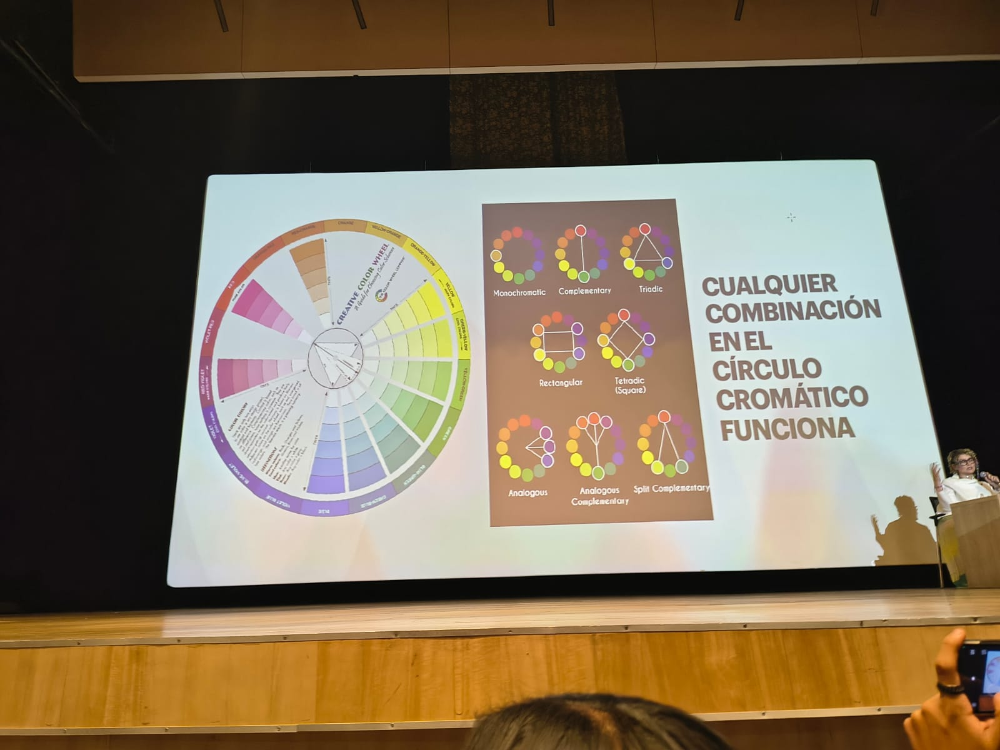
El círculo cromático fue una de las herramientas más reveladoras de la conferencia. A partir de tres colores primarios —rojo, amarillo y azul— se construyen los secundarios (verde, naranja y violeta) y, al mezclarlos nuevamente, los terciarios. Esta estructura tan simple es, en realidad, la base de cualquier paleta visual coherente, ya sea para una colección de moda o para una interfaz digital.
También trabajamos la diferencia entre colores cálidos (rojos, naranjas, amarillos), que transmiten energía y cercanía, y colores fríos (azules, verdes, violetas), que comunican calma, orden y profesionalismo. Comprender esta diferencia es clave al momento de decidir el tono general de un sitio web.
Finalmente, exploramos las relaciones entre colores complementarios (opuestos en el círculo, que generan contraste) y colores análogos (cercanos entre sí, que generan armonía). Estas relaciones son exactamente las que usamos al construir paletas para botones, fondos y textos.
The color wheel was one of the most revealing tools from the talk. From three primary colors — red, yellow and blue — secondary colors are built (green, orange and violet) and, by mixing them again, tertiary colors appear. This simple structure is, in fact, the foundation of any coherent visual palette, whether for a fashion collection or a digital interface.
We also explored the difference between warm colors (reds, oranges, yellows), which convey energy and closeness, and cool colors (blues, greens, violets), which communicate calm, order and professionalism. Understanding this difference is key when deciding the overall tone of a website.
Finally, we explored the relationships between complementary colors (opposite on the wheel, generating contrast) and analogous colors (close to each other, generating harmony). These relationships are exactly what we use when building palettes for buttons, backgrounds and text.
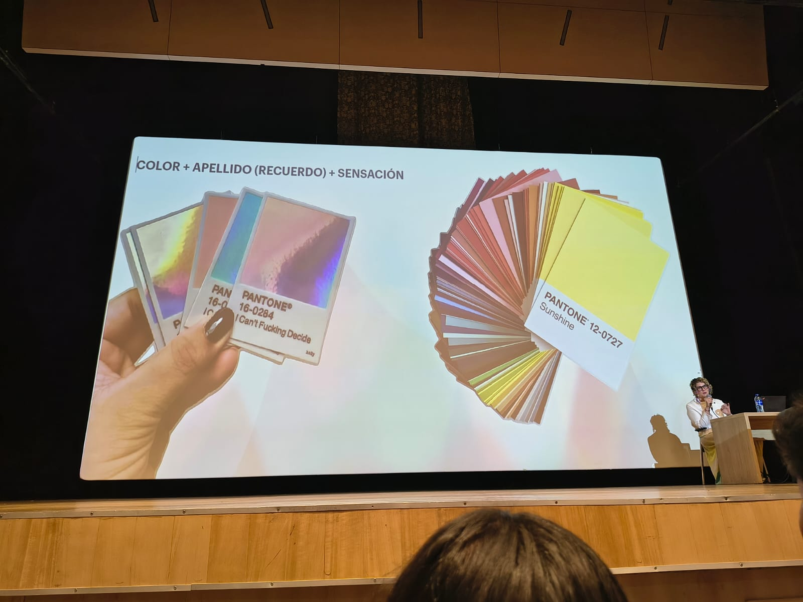
Colores primarios
Rojo, amarillo y azul: la base de toda paleta. No se obtienen mezclando otros colores.
Red, yellow and blue: the base of every palette. They cannot be obtained by mixing other colors.
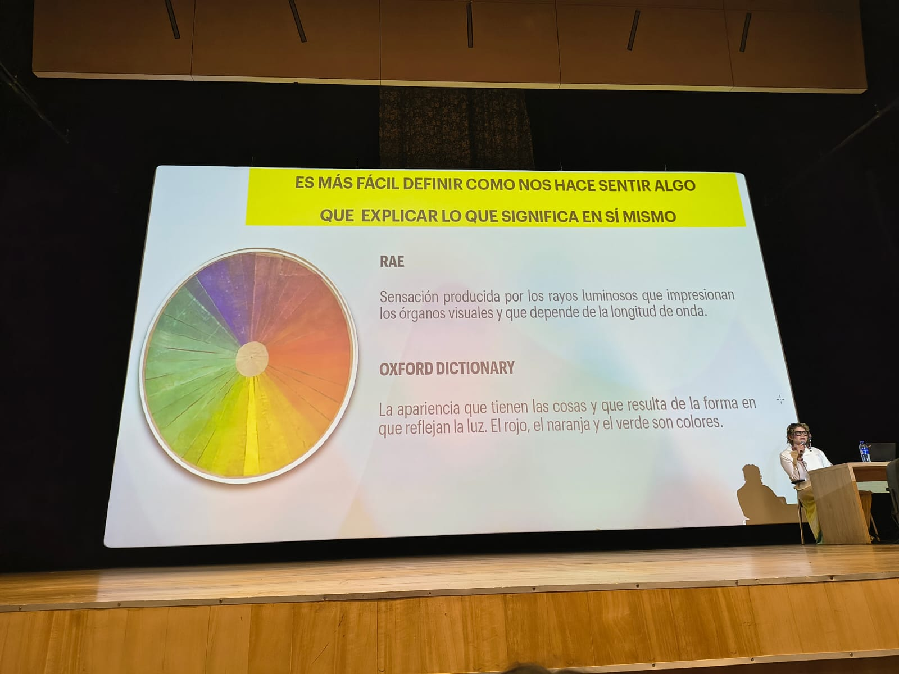
Colores secundarios
Verde, naranja y violeta, resultado de mezclar dos primarios entre sí.
Green, orange and violet, the result of mixing two primary colors together.
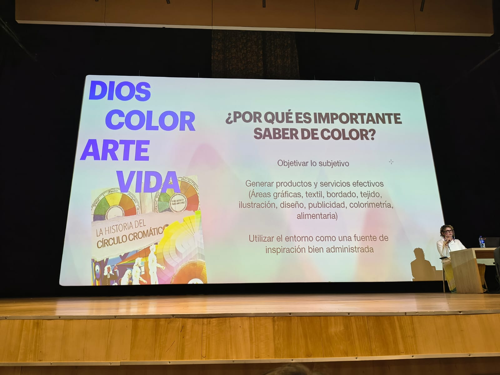
Colores terciarios
Surgen de mezclar un primario con un secundario adyacente, ampliando la paleta.
They arise from mixing a primary with an adjacent secondary color, expanding the palette.
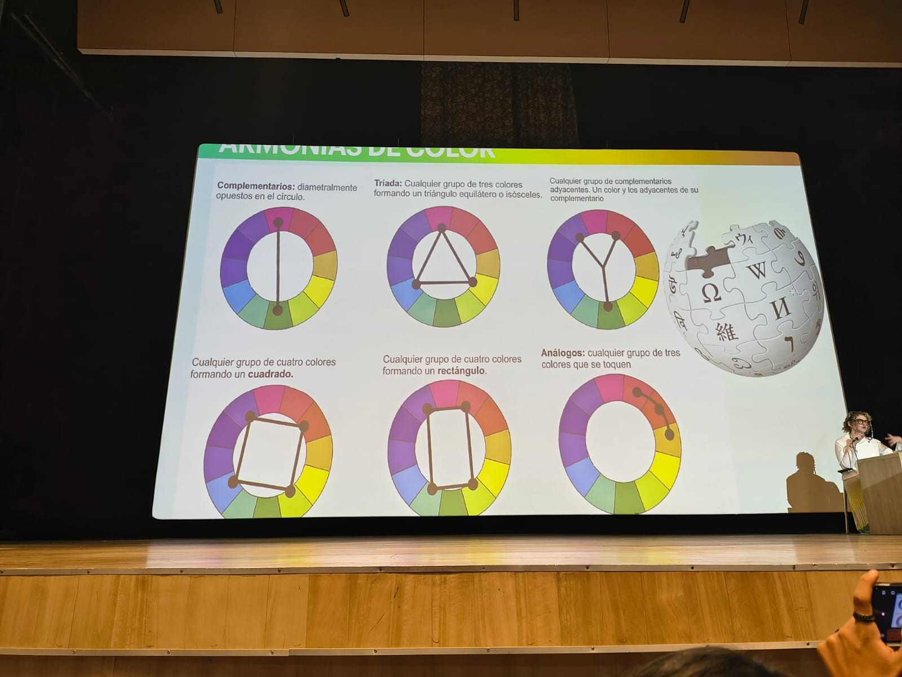
Colores cálidos
Energía, cercanía y movimiento. Útiles para llamados a la acción.
Energy, closeness and movement. Useful for calls to action.
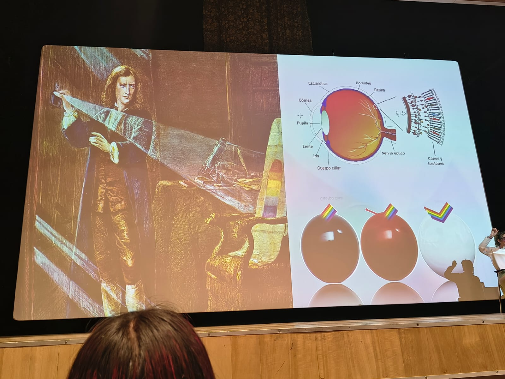
Colores fríos
Calma, orden y confianza. Ideales para fondos y áreas de lectura.
Calm, order and trust. Ideal for backgrounds and reading areas.
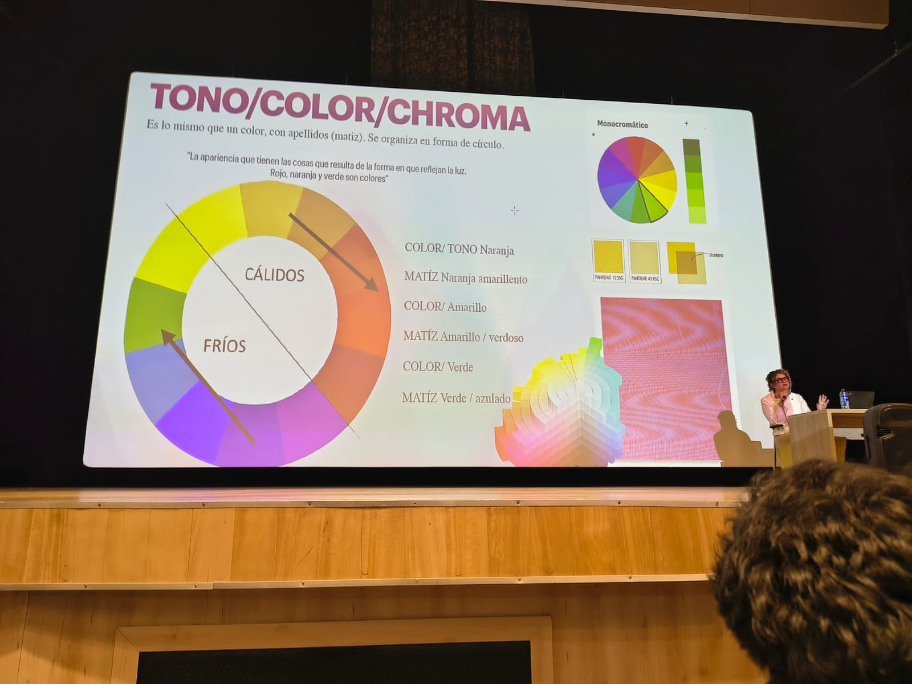
Construcción de paletas
Combinar análogos y complementarios para lograr armonía con puntos de contraste.
Combining analogous and complementary colors to achieve harmony with points of contrast.
Una persona con colores nunca está sola. / A person with colors is never alone.
Lo que yo quiera comunicar depende de los colores que utilice. / What I want to communicate depends on the colors I use.
Pregúntate: ¿Qué quieres decir o transmitir? / Ask yourself: What do you want to say or convey?
04 · Percepción y respuesta
Psicología del color
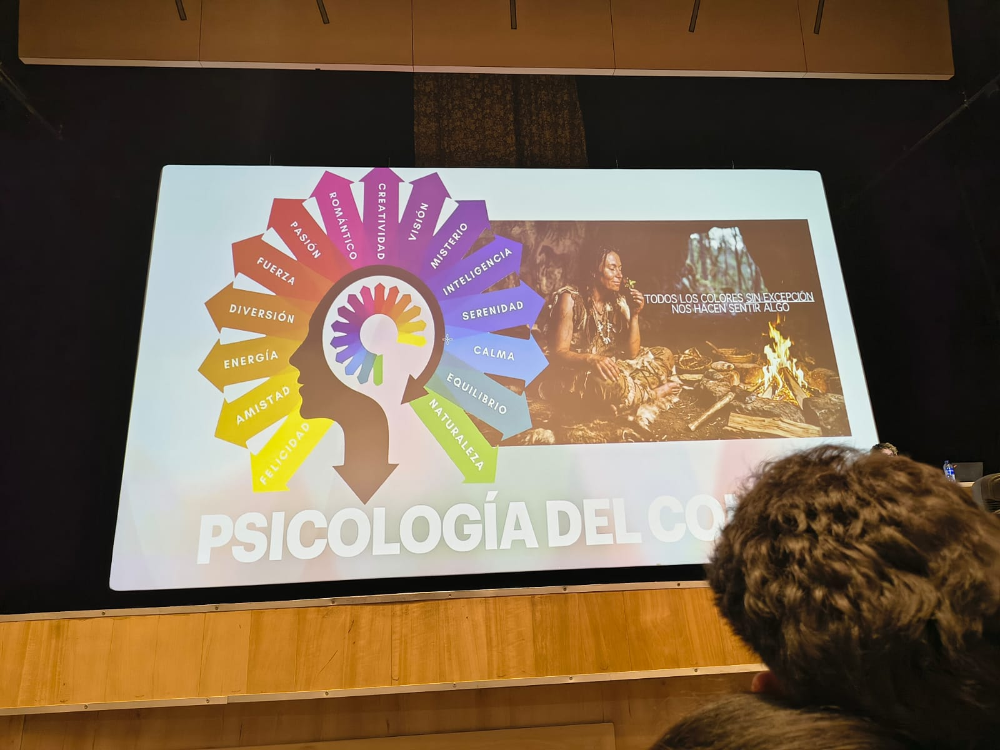
Uno de los momentos más interesantes de la conferencia fue cuando Sara explicó que el significado de un color nunca es absoluto: depende del contexto cultural, del público y de la situación. El rojo puede significar peligro en una señal de tránsito, pero también pasión en una prenda de ropa o urgencia en un botón de "comprar ahora".
Esto se conecta directamente con el desarrollo de interfaces: cada color que elegimos genera una respuesta, muchas veces inconsciente, en quien usa la aplicación. Un botón verde puede transmitir seguridad y confirmación; uno rojo, alerta o cancelación. Si elegimos mal, podemos confundir al usuario incluso si el texto es claro.
One of the most interesting moments of the talk was when Sara explained that the meaning of a color is never absolute: it depends on cultural context, audience and situation. Red can mean danger on a traffic sign, but also passion on a piece of clothing or urgency on a "buy now" button.
This connects directly with interface development: every color we choose triggers a response, often unconscious, in whoever uses the application. A green button can convey safety and confirmation; a red one, alert or cancellation. If we choose poorly, we can confuse the user even if the text itself is clear.
Es el estudio de cómo los colores influyen en las percepciones, emociones y comportamientos de las personas, tanto a nivel consciente como inconsciente.
It is the study of how colors influence people's perceptions, emotions and behaviors, both consciously and unconsciously.
El mismo color puede transmitir mensajes opuestos según el lugar, la cultura o el momento en que se use. Por eso no existen "colores buenos o malos", sino colores adecuados o no para un contexto específico.
The same color can convey opposite messages depending on the place, culture or moment in which it is used. That is why there are no "good or bad colors", only colors that are appropriate or not for a specific context.
Frente a un color, una persona puede reaccionar de forma inmediata sin darse cuenta (por ejemplo, sentir calma frente a tonos suaves), y también de forma reflexiva, asociando el color con experiencias previas.
When facing a color, a person can react immediately without realizing it (for example, feeling calm in front of soft tones), and also reflectively, associating the color with previous experiences.
En interfaces digitales, el color guía la atención, jerarquiza la información y refuerza la identidad de marca. Decidir la paleta de un sitio es, en realidad, decidir cómo queremos que se sienta la persona que lo usa.
In digital interfaces, color guides attention, prioritizes information and reinforces brand identity. Deciding a site's palette is, in fact, deciding how we want the person using it to feel.
05 · Vocabulario técnico
Conceptos técnicos aprendidos
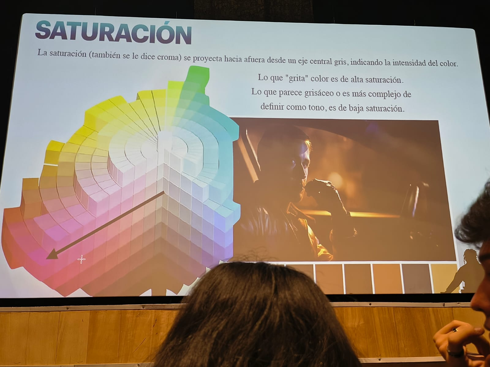
Durante la conferencia se trabajaron varios términos técnicos que, aunque parecen propios del diseño gráfico, son indispensables también para quienes desarrollamos interfaces, pues describen exactamente las propiedades que ajustamos al definir una paleta en CSS.
During the talk, several technical terms were covered which, although they seem to belong to graphic design, are also essential for those of us who develop interfaces, since they describe exactly the properties we adjust when defining a palette in CSS.
Tono (Hue)
Es el atributo que identifica un color como tal: rojo, azul, verde. En CSS corresponde al ángulo en la rueda de color (hsl).
Hue is the attribute that identifies a color as such: red, blue, green. In CSS it corresponds to the angle on the color wheel (hsl).
Matiz
Variación de un color base al mezclarse con blanco, generando versiones más claras del mismo tono.
A tint is a variation of a base color when mixed with white, producing lighter versions of the same hue.
Saturación
Indica la intensidad o pureza de un color. Una saturación baja produce colores más suaves y neutros, ideales para fondos.
Saturation indicates the intensity or purity of a color. Low saturation produces softer, more neutral colors, ideal for backgrounds.
Valor
Se refiere a qué tan claro u oscuro es un color, lo cual afecta directamente el contraste y la legibilidad de los textos.
Value refers to how light or dark a color is, which directly affects contrast and text readability.
Colores residuales
Son los matices que permanecen presentes a nuestra vista después de observar un color intenso por un periodo prolongado.
Residual colors are the afterimages that remain in our vision after looking at an intense color for a prolonged period.
CMF (Color, Material, Finish)
Disciplina que estudia cómo el color, el material y el acabado de un producto trabajan juntos para definir su percepción final.
CMF (Color, Material, Finish) is a discipline that studies how a product's color, material and finish work together to define its final perception.
06 · Recorrido por el evento
Los stands que más llamaron mi atención
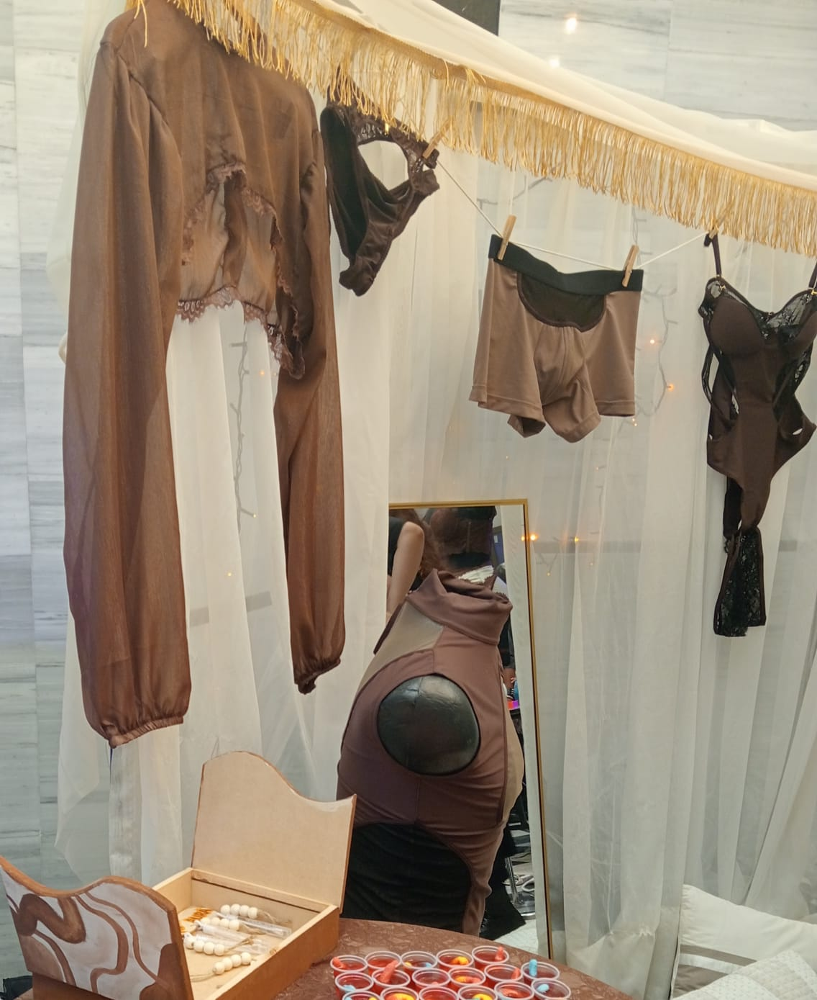
Stand 1
Este stand utilizaba una paleta cuidadosamente limitada a dos o tres tonos, lo que generaba una sensación de orden y sofisticación inmediata. La iluminación reforzaba los colores principales, haciendo que el espacio se sintiera coherente desde cualquier ángulo. Me hizo pensar en cómo, en una interfaz, limitar la cantidad de colores principales también ayuda a que el usuario perciba orden y profesionalismo.
This stand used a palette carefully limited to two or three tones, which created an immediate sense of order and sophistication. The lighting reinforced the main colors, making the space feel coherent from any angle. It made me think about how, in an interface, limiting the number of main colors also helps the user perceive order and professionalism.
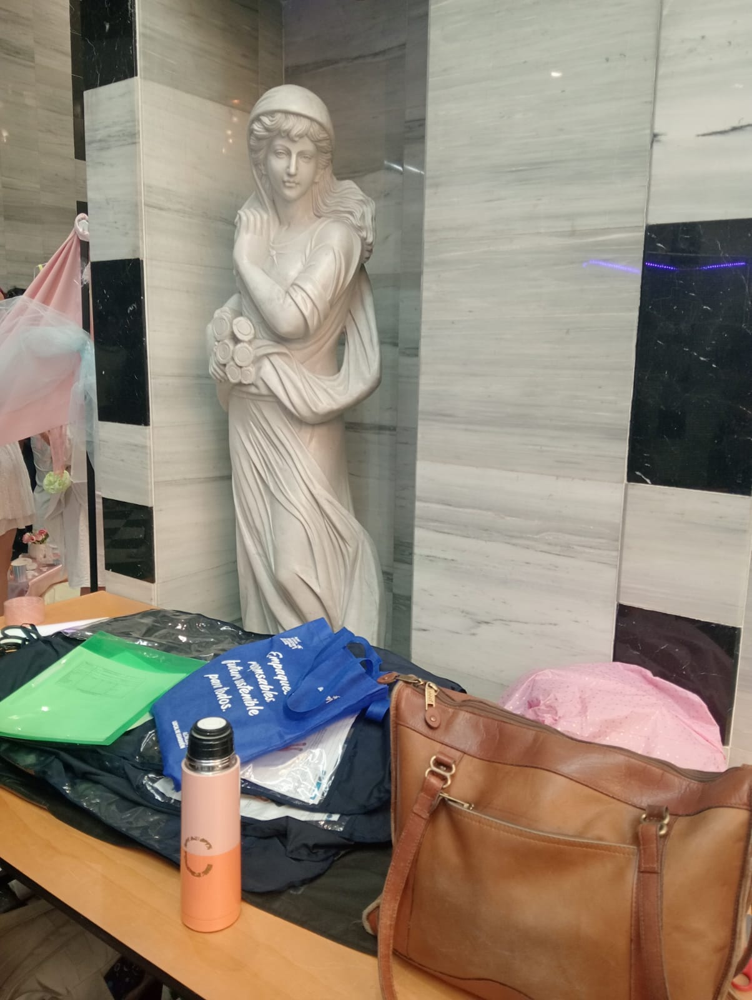
Stand 2
En este stand destacaba el contraste entre un fondo neutro y un acento de color más intenso usado únicamente en los puntos donde se quería dirigir la atención: el logo, una prenda destacada o una llamada a la acción. Esa misma lógica es la que aplicamos en interfaces cuando usamos un color de acento para botones primarios sobre un fondo claro y neutro.
In this stand, the contrast between a neutral background and a more intense accent color stood out, used only at the points where attention needed to be directed: the logo, a featured garment or a call to action. That is the same logic we apply in interfaces when we use an accent color for primary buttons over a light, neutral background.
07 · Vocabulario clave
Glossary
Glosario técnico bilingüe con los términos clave aprendidos durante la experiencia Moda ECCI. / Bilingual technical glossary with the key terms learned during the Moda ECCI experience.
| English | Español | Definition |
|---|---|---|
| Color Theory | Teoría del color | Estudio de cómo se forman, combinan y perciben los colores. / Study of how colors are formed, combined and perceived. |
| Hue | Tono | Atributo que identifica un color: rojo, azul, verde, etc. / Attribute that identifies a color: red, blue, green, etc. |
| Saturation | Saturación | Intensidad o pureza de un color. / Intensity or purity of a color. |
| Value | Valor | Nivel de claridad u oscuridad de un color. / Level of lightness or darkness of a color. |
| Pantone | Pantone | Sistema estandarizado de identificación y comunicación del color. / Standardized system for color identification and communication. |
| Visual Communication | Comunicación visual | Transmisión de ideas y mensajes a través de elementos visuales. / Transmission of ideas and messages through visual elements. |
| Branding | Identidad de marca | Conjunto de elementos visuales y conceptuales que identifican una marca. / Set of visual and conceptual elements that identify a brand. |
| User Experience (UX) | Experiencia de usuario | Percepción y respuesta de una persona al usar un producto o servicio. / A person's perception and response when using a product or service. |
| User Interface (UI) | Interfaz de usuario | Conjunto de elementos visuales con los que el usuario interactúa. / Set of visual elements the user interacts with. |
| Accessibility | Accesibilidad | Diseño que permite el uso de un producto por la mayor cantidad de personas posible. / Design that allows the widest possible range of people to use a product. |
| Color Psychology | Psicología del color | Estudio de cómo los colores afectan emociones y comportamientos. / Study of how colors affect emotions and behaviors. |
| Pigment | Pigmento | Sustancia que da color a un material. / Substance that gives color to a material. |
| Contrast | Contraste | Diferencia perceptible entre dos colores o elementos. / Perceptible difference between two colors or elements. |
| Palette | Paleta | Conjunto de colores seleccionados para un proyecto. / Set of colors selected for a project. |
| Analogous Colors | Colores análogos | Colores cercanos entre sí en el círculo cromático. / Colors that are close to each other on the color wheel. |
| Complementary Colors | Colores complementarios | Colores opuestos en el círculo cromático que generan contraste. / Colors opposite each other on the color wheel that create contrast. |
| Warm Colors | Colores cálidos | Tonos como el rojo, naranja y amarillo, asociados a energía. / Tones like red, orange and yellow, associated with energy. |
| Cool Colors | Colores fríos | Tonos como el azul, verde y violeta, asociados a calma. / Tones like blue, green and violet, associated with calm. |
| Semiology | Semiología | Estudio de los signos y símbolos y su significado. / Study of signs and symbols and their meaning. |
| CMF (Color, Material, Finish) | CMF (Color, Material, Acabado) | Disciplina que combina color, material y acabado en el diseño de productos. / Discipline that combines color, material and finish in product design. |
| Tertiary Colors | Colores terciarios | Colores resultantes de mezclar un primario con un secundario. / Colors resulting from mixing a primary with a secondary color. |
| Color Wheel | Círculo cromático | Representación circular de la relación entre los colores. / Circular representation of the relationship between colors. |
08 · Pensamiento crítico
Sostenibilidad y economía circular
Español
La industria de la moda es una de las que más recursos consume y más residuos genera a nivel mundial, por lo que reflexionar sobre sostenibilidad en un evento como Moda ECCI resulta inevitable. Durante la conferencia, varias de las propuestas mostradas integraban materiales reutilizados, telas recicladas y procesos de producción pensados para reducir el desperdicio desde el diseño inicial.
Esto me llevó a pensar en la economía circular no solo como un concepto aplicable a la moda, sino también al desarrollo de software: optimizar recursos, reutilizar componentes, escribir código eficiente y evitar procesos innecesarios son formas de aplicar los mismos principios de reducción y reutilización en el mundo digital.
La tecnología puede apoyar estos procesos sostenibles facilitando la trazabilidad de materiales, optimizando inventarios para evitar sobreproducción, y permitiendo que las marcas comuniquen de forma transparente su impacto ambiental a través de interfaces claras y accesibles.
English
The fashion industry is one of the most resource-intensive and waste-generating industries worldwide, which makes reflecting on sustainability at an event like Moda ECCI unavoidable. During the talk, several of the proposals shown integrated reused materials, recycled fabrics and production processes designed to reduce waste from the very first design stage.
This led me to think of the circular economy not only as a concept applicable to fashion, but also to software development: optimizing resources, reusing components, writing efficient code and avoiding unnecessary processes are ways of applying the same principles of reduction and reuse in the digital world.
Technology can support these sustainable processes by enabling material traceability, optimizing inventories to avoid overproduction, and allowing brands to transparently communicate their environmental impact through clear and accessible interfaces.
09 · Cierre
Conclusiones
Español
La experiencia en Moda ECCI y la conferencia de Sara Viloria me dejaron una idea muy clara: la moda, la tecnología y el desarrollo FrontEnd no son mundos separados, sino lenguajes distintos que hablan de lo mismo: comunicación, identidad y emoción a través de lo visual.
Aprender sobre teoría del color, psicología del color, historia de los pigmentos y conceptos como saturación, valor o CMF me permitió ver mi trabajo como desarrollador desde una perspectiva más amplia. Cada paleta que defino, cada componente que diseño y cada interacción que programo es, en el fondo, una decisión de comunicación visual.
Concluyo entendiendo que, así como un diseñador de moda elige colores y materiales para contar una historia a través de una prenda, nosotros, como desarrolladores, también comunicamos emociones mediante el diseño de interfaces: la calidez de una paleta, la calma de un fondo claro o la energía de un botón de acción son, en definitiva, parte del mismo lenguaje visual que escuchamos en esta conferencia.
English
The experience at Moda ECCI and Sara Viloria's talk left me with a very clear idea: fashion, technology and FrontEnd development are not separate worlds, but different languages speaking about the same thing: communication, identity and emotion through the visual.
Learning about color theory, color psychology, the history of pigments and concepts such as saturation, value or CMF allowed me to see my work as a developer from a broader perspective. Every palette I define, every component I design and every interaction I code is, at its core, a visual communication decision.
I conclude by understanding that, just as a fashion designer chooses colors and materials to tell a story through a garment, we, as developers, also communicate emotions through interface design: the warmth of a palette, the calm of a light background or the energy of an action button are, ultimately, part of the same visual language we heard about in this conference.